Bảng điều phối
Trang chủ của CRM: nhìn một lần là biết mọi đơn đang ở bước nào, đơn nào sắp trễ, đơn nào còn nợ tiền.

Đọc bảng điều phối
- 4 ô số liệu ở trên: báo giá đang mở, đơn đang chạy, đang sản xuất (kèm số lệnh gấp), công nợ của đơn đã giao.
- 6 cột tương ứng 6 bước. Cột 1 là các báo giá đang mở; cột 6 có thêm các đơn đã hoàn tất trong 14 ngày gần nhất.
- Mỗi thẻ là một đơn: mã đơn, tên khách, hàng hoá, hạn giao và một dòng tiến độ (ví dụ “maket v2 · chờ phản hồi”, “Xưởng: In · hạn 06/11”). Nhãn Gấp, File sẵn, tình trạng tiền hiện ở cuối thẻ.
- Bấm vào thẻ để mở chi tiết đơn hoặc báo giá.
Lọc nhanh
- Ô tìm kiếm: gõ mã đơn, tên khách hoặc số điện thoại.
- Hạn trong 7 ngày, Quá hạn: chỉ hiện đơn sắp tới hạn hoặc đã trễ.
- Công tắc Còn hàng chưa lên chuyến: đơn còn hàng chưa xếp chuyến giao.
- Thẻ tiền Chưa cọc Đã cọc Còn nợ Đã thanh toán (chỉ hiện với người được xem tiền).
Nút Báo giá mới và Đơn không qua báo giá ở góc phải giúp tạo mới ngay từ bảng điều phối.
Danh mục sản phẩm
Danh sách sản phẩm và đơn giá dùng khi lập báo giá. Chuẩn bị danh mục trước giúp báo giá nhanh và giá đồng nhất.

Hai cách tính giá
| Cách tính | Dùng cho | Khi báo giá |
|---|---|---|
| Theo m² (rộng × cao) | Decal, bạt, biển, hộp đèn… | Nhập rộng và cao (mét). Giá 1 tấm = rộng × cao × đơn giá/m², làm tròn tới đồng; thành tiền = giá tấm × số tấm. |
| Theo số lượng | Standee, card visit… | Nhập số lượng. Thành tiền = số lượng × đơn giá. |
Thêm hoặc sửa sản phẩm
- Bấm Thêm sản phẩm (hoặc biểu tượng sửa ở dòng sản phẩm).
- Nhập Tên sản phẩm, Nhóm (Decal, Bạt, Biển & hộp đèn…), chọn Cách tính giá.
- Với cách tính theo số lượng, nhập Đơn vị tính (cái, bộ, hộp…). Nhập Đơn giá (chưa gồm VAT).
- Bấm Lưu.
Khách hàng
Danh bạ khách hàng kèm toàn bộ báo giá, đơn hàng, công nợ và tài liệu của từng khách.
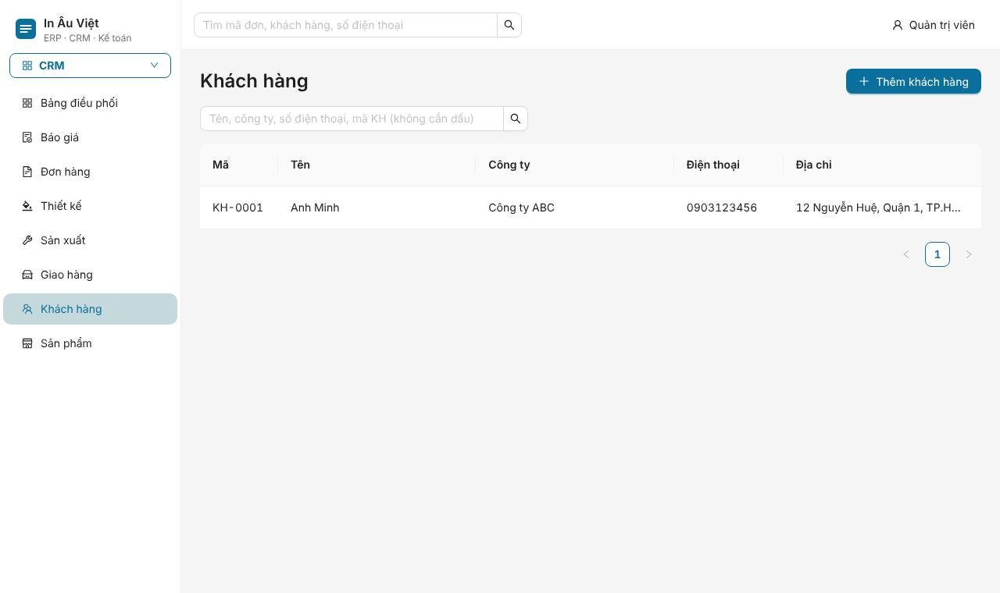
Thêm khách hàng mới
- Bấm Thêm khách hàng.
- Nhập Tên và Số điện thoại (bắt buộc). Có thể thêm công ty, mã số thuế, địa chỉ giao hàng mặc định, ghi chú.
- Bấm lưu. Khách được cấp mã tự động dạng
KH-0001.
Bạn cũng có thể thêm khách ngay khi lập báo giá hoặc đơn hàng, trong ô chọn khách hàng.
Hồ sơ khách hàng
Bấm vào tên khách để mở hồ sơ:
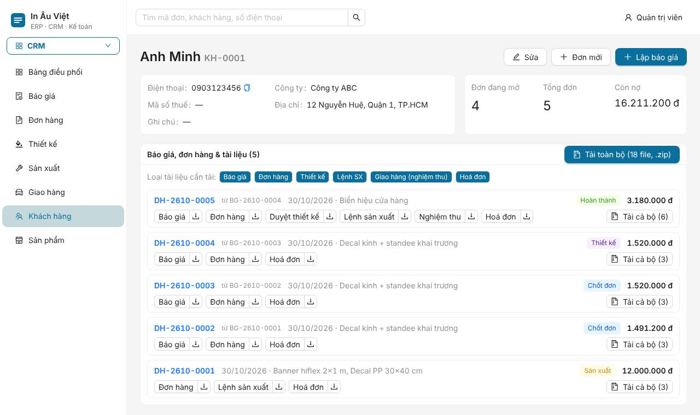
- Thông tin liên hệ, số đơn đang mở, tổng giá trị đơn, số tiền còn nợ.
- Nút Đơn mới và lập báo giá cho khách này.
- Báo giá, đơn hàng & tài liệu: mỗi báo giá / đơn một dòng, kèm các file PDF xem hoặc tải riêng; nút tải cả bộ của từng đơn.
- Chọn Loại tài liệu cần tải (Báo giá, Đơn hàng, Thiết kế, Lệnh SX, Giao hàng, Hoá đơn) rồi tải toàn bộ thành một file .zip, mỗi đơn một thư mục.
Hội thoại Facebook
Tin nhắn Messenger gửi tới fanpage và bình luận dưới bài viết hiện ở đây. Bạn trả lời ngay trong CRM, không cần mở Facebook.

Biết có tin mới
- Menu Hội thoại hiện số hội thoại có tin chưa đọc; tiêu đề tab trình duyệt cũng hiện số này.
- Khi khách nhắn, máy phát một tiếng chuông ngắn và danh sách tự cập nhật, không cần tải lại trang.
- Biểu tượng bong bóng xanh là tin nhắn Messenger, bong bóng cam là bình luận.
Lọc danh sách
- Tất cả, Của tôi (giao cho bạn), Chưa nhận (chưa ai phụ trách), Chờ trả lời (khách nhắn sau cùng).
- Tìm theo tên hoặc số điện thoại; chọn chỉ Tin nhắn hoặc chỉ Bình luận; xem lại hội thoại Đã xong.
Trả lời tin nhắn
- Bấm vào hội thoại. Tin của khách bên trái, tin của trang bên phải (kèm tên nhân viên gửi).
- Gõ nội dung, nhấn Enter để gửi (Shift + Enter để xuống dòng).
- Gửi ảnh hoặc tệp (PDF báo giá, maket…): bấm nút kẹp giấy, chọn tệp tối đa 25 MB.
Hội thoại chưa ai nhận sẽ tự giao cho người trả lời đầu tiên. Khách cũ nhắn lại thì về người đã phụ trách họ lần trước.
Tin gửi lỗi hiện nền đỏ kèm lý do (ví dụ khách đã chặn trang). Tin ghi Gửi từ Facebook là tin ai đó trả lời trực tiếp trên Facebook / Meta Business Suite; CRM vẫn lưu để lịch sử đủ, nhưng nên trả lời trong CRM để biết ai đã nhắn.
Trả lời bình luận

- Trả lời công khai: câu trả lời hiện ngay dưới bình luận mới nhất của khách. Bấm Xem bài viết để mở bài trên Facebook.
- Nhắn riêng: gửi một tin Messenger cho người bình luận. Facebook chỉ cho một lần và trong 7 ngày kể từ bình luận. Khách trả lời tin riêng thì cuộc trò chuyện hiện thành hội thoại Messenger mới.
Gắn khách hàng và lập báo giá
- Khách nhắn số điện thoại thì CRM tự nhận ra và hiện ở cột phải.
- Bấm Gắn khách có sẵn (gõ tên hoặc số để tìm) hoặc Tạo khách mới (tên và số điện thoại điền sẵn).
- Đã gắn khách thì bấm Lập báo giá: báo giá mới mở sẵn khách này.
Phân công và kết thúc
- Người có quyền phân công chọn người trong ô Phụ trách. Nhân viên kinh doanh bấm Nhận hội thoại để nhận hội thoại chưa ai nhận.
- Nhân viên chỉ thấy hội thoại của mình và hội thoại chưa ai nhận; quản trị viên và người có quyền “Xem tất cả” thấy hết.
- Xong việc bấm Đánh dấu xong. Khách nhắn lại thì hội thoại tự mở lại.
Báo giá
Lập báo giá cho khách, gửi đi, theo dõi khách chốt hay không. Khách chốt thì báo giá thành đơn hàng chỉ với một nút bấm.
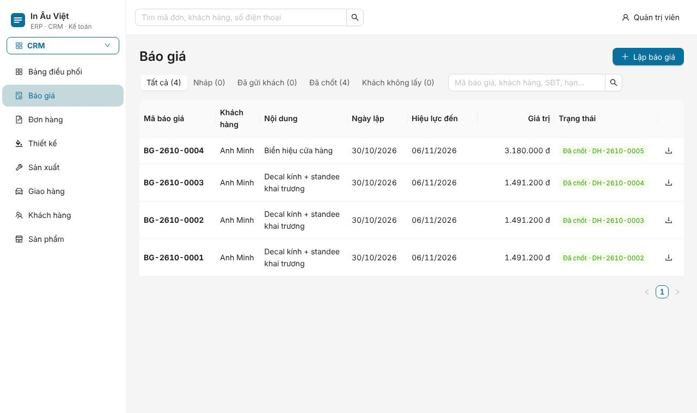
Trạng thái của báo giá
| Trạng thái | Nghĩa là |
|---|---|
| Nháp | Mới lập, chưa gửi khách. Sửa thoải mái. |
| Đã gửi khách | Đã gửi, đang chờ khách trả lời. Vẫn sửa được. |
| Đã chốt | Khách đồng ý, đã thành đơn hàng. Không sửa nữa (sửa ở đơn hàng). |
| Khách không lấy | Khách từ chối. Mở lại được khi khách quay lại. |
Báo giá quá ngày hiệu lực có nhãn Hết hiệu lực.
Lập báo giá mới
- Bấm Lập báo giá (hoặc Báo giá mới ở bảng điều phối).
- Khách hàng: gõ tên hoặc số điện thoại để chọn; khách mới thì thêm ngay trong ô này.
- Nội dung báo giá: mô tả ngắn, ví dụ “Biển hiệu mặt tiền + decal kính”. Hiệu lực: số ngày (mặc định 7).
- Hạng mục: chọn sản phẩm từ danh mục hoặc gõ tên hạng mục tự do.
- Sản phẩm tính theo m²: nhập rộng × cao (mét) và số tấm; phần mềm tự tính diện tích và giá.
- Sản phẩm tính theo số lượng: nhập số lượng.
- Có thể sửa đơn giá ở từng dòng nếu báo giá riêng cho khách.
- Ghi chú in trên báo giá (ví dụ “Đã gồm lắp đặt nội thành”), rồi bấm Lưu báo giá.
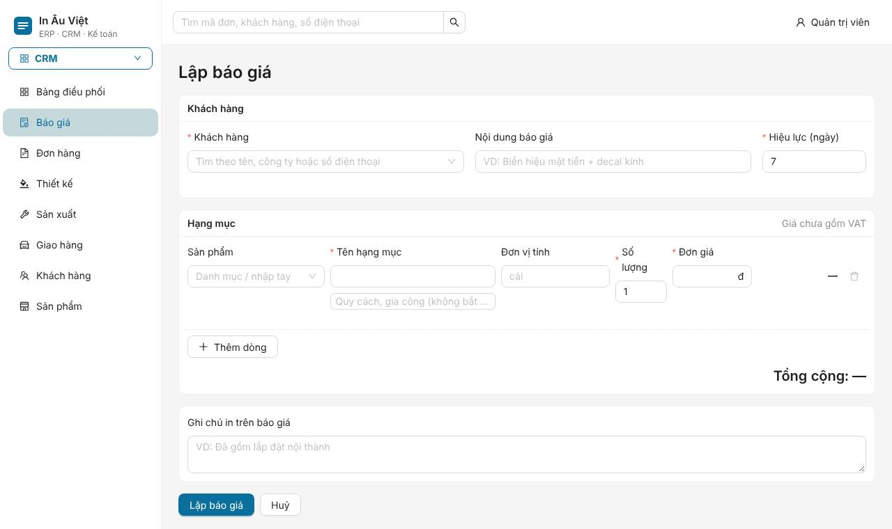
Gửi, theo dõi và chốt
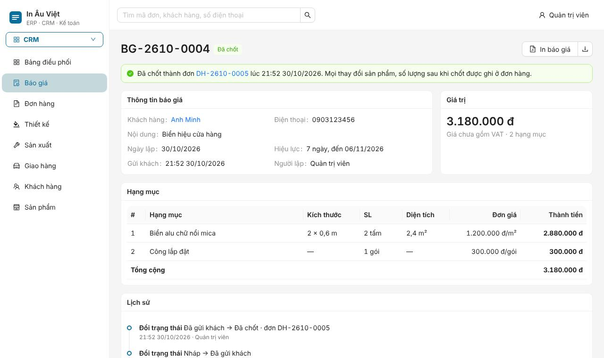
- Bấm In báo giá để mở hoặc tải PDF gửi khách (qua Zalo, email…).
- Gửi xong, bấm Đã gửi khách để đánh dấu.
- Khách đồng ý: bấm Khách chốt → tạo đơn, nhập hạn giao và ghi chú đơn (để trống thì dùng ghi chú của báo giá), bấm Tạo đơn hàng. Đơn được tạo với đúng các hạng mục của báo giá.
- Khách từ chối: bấm Khách không lấy và ghi lý do. Sau này khách quay lại thì bấm Mở lại báo giá.
Đơn hàng và chốt đơn
Mọi việc của một đơn đều nằm trên trang chi tiết đơn: thanh 6 bước ở trên, thông tin, hàng hoá, chuyến giao, thanh toán và lịch sử ở dưới.

Trang chi tiết đơn
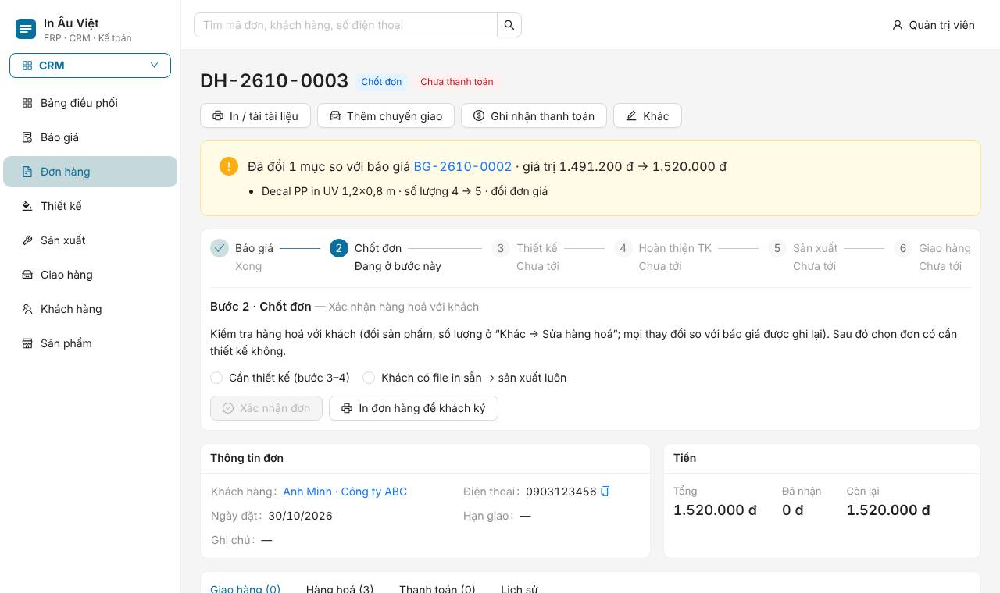
- Hàng nút trên cùng: In / tải tài liệu, Thêm chuyến giao, Ghi nhận thanh toán, Khác (sửa ngày & ghi chú, sửa hàng hoá, huỷ đơn).
- Thanh 6 bước: bước đang làm được tô đậm. Bấm vào một bước đã qua để xem lại việc của bước đó.
- Phía dưới: thông tin đơn, ô Tiền (tổng / đã nhận / còn lại) và các thẻ Giao hàng, Hàng hoá, Thanh toán, Lịch sử.
Bước 2: xác nhận đơn
Sau khi khách chốt, kinh doanh xác nhận lại hàng hoá với khách rồi chọn hướng đi của đơn.
- Kiểm tra khung so sánh với báo giá. Nếu khách đổi sản phẩm, kích thước hay số lượng, bấm Khác → Sửa hàng hoá. Không cần ai duyệt; mọi thay đổi đều được ghi lại và hiện chênh lệch so với báo giá.
- Chọn Cần thiết kế (bước 3–4) hoặc Khách có file in sẵn → sản xuất luôn.
- Bấm Xác nhận đơn. Đơn chuyển sang Thiết kế, hoặc tạo lệnh sản xuất ngay nếu khách có file sẵn.
Tạo đơn không qua báo giá
Dùng khi khách đặt luôn, không cần báo giá.
- Vào → Đơn mới (hoặc Đơn không qua báo giá ở bảng điều phối).
- Chọn khách, ngày đặt, hạn giao, ghi chú.
- Hàng hoá: mỗi dòng gồm mặt hàng, quy cách (chất liệu, gia công), số lượng, đơn giá (không bắt buộc).
- Kế hoạch giao hàng (có thể thêm sau): ngày giao, địa chỉ, số lượng từng mặt hàng mỗi chuyến.
- Tiền cọc: tích “Khách đã cọc”, nhập số tiền và hình thức nếu có. Bấm lưu.

Sửa và huỷ đơn
- Khác → Sửa ngày & ghi chú: đổi hạn giao, ghi chú.
- Khác → Sửa hàng hoá: đổi, thêm, bỏ hạng mục. Không giảm số lượng xuống dưới số đã xếp chuyến giao.
- Khác → Huỷ đơn: phải ghi lý do. Các chuyến chưa giao cũng bị huỷ; khoản đã thu vẫn giữ trong lịch sử.
Thiết kế và hoàn thiện thiết kế
Người thiết kế gửi maket cho khách, ghi lại khách muốn sửa gì, đến khi khách duyệt. Sau đó hoàn thiện file in và khoá thiết kế để xưởng sản xuất.
Màn hình Việc thiết kế
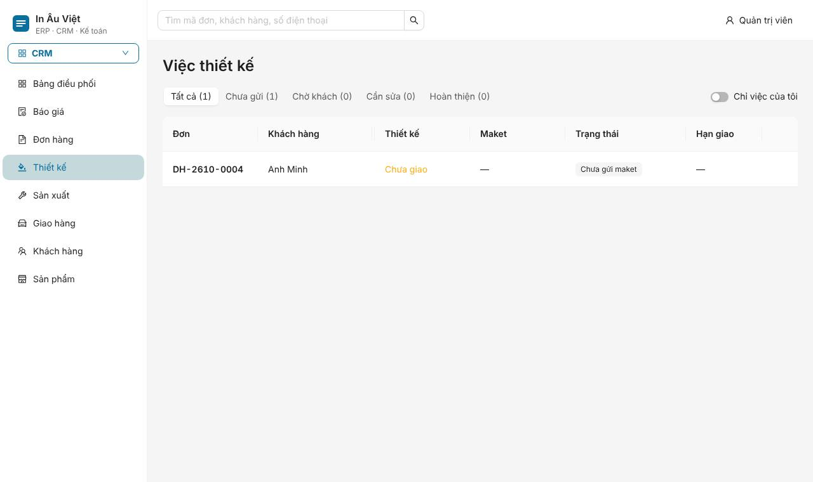
- Các thẻ: Chưa gửi · Chờ khách · Cần sửa · Hoàn thiện.
- Bật Chỉ việc của tôi để chỉ thấy đơn được giao cho mình.
- Bấm vào đơn để làm việc trên trang chi tiết đơn.
Bước 3: gửi maket và ghi phản hồi

- Giao người thiết kế (kinh doanh hoặc trưởng nhóm): chọn ở ô Người thiết kế.
- Thiết kế xong, gửi maket cho khách (Zalo, email…), rồi bấm Đã gửi maket v1 và ghi nội dung / kênh gửi.
- Khách muốn sửa: bấm Khách yêu cầu sửa v1, ghi khách muốn sửa gì. Sửa xong gửi lại và bấm Đã gửi maket v2… cứ thế tới khi khách đồng ý.
- Khách đồng ý: bấm Khách duyệt vN, chọn kênh duyệt (Zalo, Email, Trực tiếp…) và tên người duyệt bên khách, bấm Xác nhận duyệt. Đơn sang bước 4.
Bước 4: hoàn thiện và khoá thiết kế
- Hoàn thiện file in đúng bản khách duyệt, rồi tích File in đã hoàn thiện đúng theo bản khách duyệt.
- Bấm Khoá thiết kế → tạo lệnh sản xuất. Phần mềm tạo lệnh sản xuất (mã
LSX-YYMM-NNNN) và đơn sang bước 5.
Khách đổi ý sau khi đã duyệt? Bấm Khách đổi ý, sửa tiếp: bản đã duyệt chuyển thành “khách yêu cầu sửa” và đơn quay lại bước 3.
Nút In phiếu duyệt thiết kế tạo phiếu ghi bản duyệt, kênh và người duyệt.
Sản xuất
Xưởng theo dõi các lệnh sản xuất trên một bảng theo công đoạn và bấm chuyển công đoạn khi làm xong.
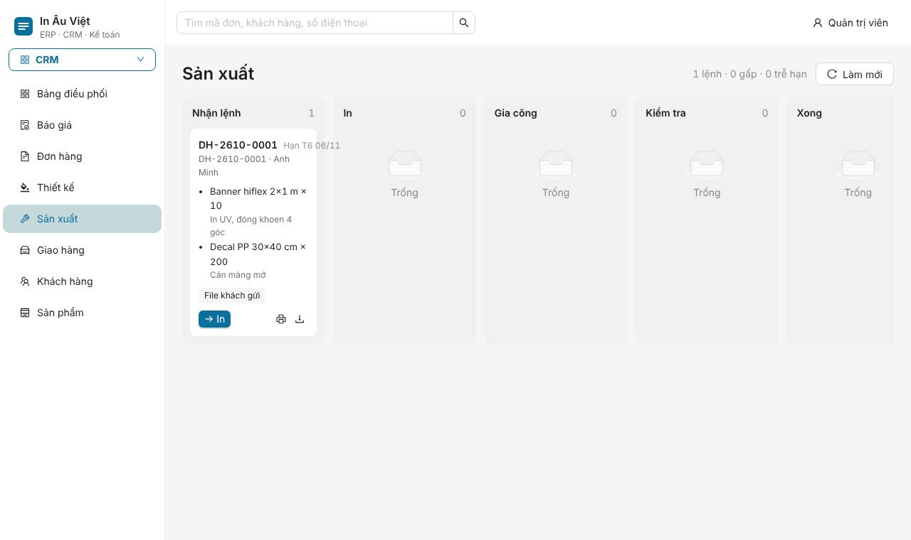
Công đoạn
Mỗi lệnh đi qua: Nhận lệnh → In → Gia công → Kiểm tra → Xong.
- Thẻ lệnh ghi mã lệnh, khách, hàng cần làm, quy cách, in theo maket nào, hạn xưởng, nhãn GẤP và Trễ. Màn hình xưởng không hiện giá tiền.
- Bấm → In, → Gia công… trên thẻ để chuyển sang công đoạn tiếp theo.
- Ở công đoạn Xong, bấm Chuyển giao hàng để báo hàng đã sẵn sàng giao. Đơn sang bước 6.
- Biểu tượng in trên thẻ để xem / in lệnh sản xuất.
Trên trang chi tiết đơn

- Hạn xưởng: mặc định bằng hạn giao của đơn (hoặc 3 ngày nếu đơn chưa có hạn). Đổi được.
- Ưu tiên: Thường / Gấp. Lệnh gấp hiện nổi bật trên bảng sản xuất.
- Nút Cập nhật: … chuyển công đoạn tiếp theo (chỉ nhóm Sản xuất).
Giao hàng và nghiệm thu
Một đơn có thể giao một hoặc nhiều chuyến. Giao đủ hàng thì khách ký biên bản nghiệm thu và đơn hoàn tất.

Các thẻ trên màn hình Giao hàng
| Thẻ | Hiện gì |
|---|---|
| Hôm nay / Sắp tới / Trễ lịch | Chuyến chờ giao theo ngày dự kiến (mã chuyến GH-YYMM-NNNN). |
| Đã giao | Chuyến đã giao xong. |
| Chờ nghiệm thu | Đơn đã giao đủ, chờ khách ký. |
| Đã nghiệm thu | Đơn khách đã ký biên bản. |
Xếp chuyến giao
- Trên trang chi tiết đơn, bấm Thêm chuyến giao.
- Chọn Ngày giao dự kiến, Địa chỉ giao.
- Nhập số lượng chuyến này cho từng mặt hàng (phần mềm hiện số còn có thể lên chuyến). Ghi chú cho tài xế nếu cần. Bấm Lưu chuyến.
Xác nhận đã giao
- Bấm Giao xong ở chuyến (trên màn hình Giao hàng hoặc thẻ Giao hàng của đơn).
- Kiểm tra cột Thực giao từng mặt hàng. Giao thiếu thì sửa số thực giao: phần thiếu tự quay về “chưa lên chuyến” để xếp chuyến khác.
- Ghi thời gian giao, người nhận.
- Nếu thu tiền tại chỗ, tích Thu tiền trong chuyến này, nhập số tiền và hình thức.
- Bấm Xác nhận đã giao.
Giao nhầm? Bấm Mở lại ở chuyến đã giao để đưa về “Chờ giao”. Chuyến chưa giao thì Sửa hoặc Huỷ được.
Khách ký nghiệm thu

- Bấm In biên bản để in biên bản nghiệm thu và bàn giao cho khách ký.
- Khách ký xong, bấm Khách đã ký (hoặc Khách đã ký nghiệm thu trên đơn), nhập người ký bên khách và ghi chú.
- Đơn chuyển sang Hoàn thành. Doanh thu và công nợ của đơn tự vào sổ kế toán.
Thanh toán và công nợ
Ghi nhận tiền khách trả (cọc hoặc thanh toán) và xem ai còn nợ. Mỗi khoản thu tự vào sổ kế toán.
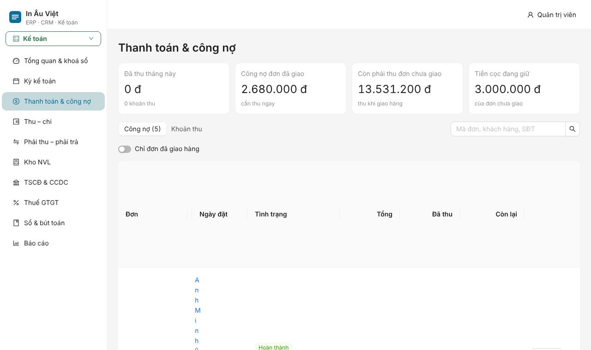
Đọc màn hình
- 4 ô số liệu: đã thu tháng này, công nợ đơn đã giao (cần thu ngay), còn phải thu đơn chưa giao, tiền cọc đang giữ.
- Công nợ: các đơn còn nợ, đơn đã giao xếp trước. Bật “Chỉ đơn đã giao hàng” để tập trung đòi tiền.
- Khoản thu: mọi khoản đã thu, lọc theo khoảng ngày, hình thức, hiện cả khoản đã huỷ; có tổng tiền theo bộ lọc.
Ghi nhận một khoản thu
- Bấm Thu ở dòng đơn trong bảng Công nợ, hoặc Ghi nhận thanh toán trên trang chi tiết đơn.
- Nhập Số tiền, chọn Hình thức (Tiền mặt / Chuyển khoản / Khác) và Ngày nhận.
- Nếu là tiền cọc, tích Đây là tiền cọc. Nếu thu trong một chuyến giao, chọn chuyến đó.
- Bấm Lưu.
Ghi nhầm thì sao?
Mở đơn → thẻ Thanh toán → bấm Huỷ ở khoản đó và ghi lý do. Khoản bị huỷ vẫn hiện trong lịch sử (gạch ngang) nhưng không còn tính vào số đã nhận. Khoản thu không bao giờ bị xoá hẳn.
Biểu tượng tải ở cuối dòng công nợ để tải hoá đơn bán hàng (nội bộ).
In và tải chứng từ PDF
Phần mềm tạo sẵn 6 loại chứng từ PDF. Chứng từ chỉ có khi đơn đã tới bước tương ứng.
| Chứng từ | Có từ khi |
|---|---|
| Báo giá | Lập báo giá |
| Đơn đặt hàng | Có đơn hàng (bước 2) |
| Phiếu duyệt thiết kế | Khách duyệt maket (bước 3–4) |
| Lệnh sản xuất | Khoá thiết kế (bước 5) |
| Biên bản nghiệm thu và bàn giao | Giao đủ hàng (bước 6) |
| Hoá đơn bán hàng (nội bộ) | Đơn có giá |
Ba cách tải
- Từ danh sách: biểu tượng tải ở cuối mỗi dòng báo giá / đơn hàng / công nợ — không cần mở chi tiết.
- Trên trang chi tiết đơn: nút In / tải tài liệu → chọn từng chứng từ, hoặc Tải cả bộ (.zip).
- Trong hồ sơ khách hàng: tải riêng từng file, cả bộ từng đơn, hoặc chọn loại tài liệu rồi tải toàn bộ.
Phân hệ Kế toán hoạt động thế nào
Đây là sổ kế toán nội bộ theo Thông tư 133. Phần lớn bút toán được ghi tự động; kế toán chủ yếu nhập chứng từ chi, kho, tài sản và khoá sổ mỗi cuối tháng.
Ba khái niệm cần nắm
1. Kỳ kế toán = một tháng
Sổ chia theo tháng (ví dụ kỳ 10/2026). Mỗi kỳ ở trạng thái Đang mở (được ghi chứng từ) hoặc Đã khoá sổ (chỉ xem). Cuối tháng kế toán chạy 5 bước rồi khoá sổ; số dư tự chuyển sang tháng sau.
Mọi màn hình kế toán có ô chọn kỳ ở cạnh tiêu đề. Mặc định là kỳ đang mở sớm nhất (kỳ cần khoá tiếp theo).
2. Những gì tự ghi sổ
| Việc xảy ra | Phần mềm tự ghi |
|---|---|
| Thu tiền khách ở CRM | Phiếu thu PT: tiền vào 111/112, giảm công nợ 131 |
| Huỷ khoản thu | Xoá phiếu thu (kỳ đang mở) hoặc ghi bút toán đảo (kỳ đã khoá) |
| Khách ký nghiệm thu | Doanh thu DT: công nợ 131 = tổng đơn + 8% VAT; doanh thu 511; thuế đầu ra 33311 |
| Kế toán lập phiếu nhập, xuất, chi, mua tài sản | Bút toán tương ứng (xem từng mục) |
| Chạy 5 bước cuối kỳ | Giá vốn, khấu hao, phân bổ, khấu trừ thuế, kết chuyển lãi lỗ |
3. Tài khoản thường gặp
| TK | Tên | TK | Tên |
|---|---|---|---|
| 111 | Tiền mặt | 331 | Phải trả nhà cung cấp |
| 112 | Tiền gửi ngân hàng | 33311 | Thuế GTGT đầu ra |
| 131 | Phải thu khách hàng | 411 | Vốn chủ sở hữu |
| 1331 | Thuế GTGT đầu vào được khấu trừ | 421 | Lợi nhuận chưa phân phối |
| 152 | Nguyên vật liệu | 511 | Doanh thu |
| 154 | Chi phí sản xuất dở dang | 632 | Giá vốn hàng bán |
| 211 / 214 | Tài sản cố định / Hao mòn | 6421 | Chi phí bán hàng |
| 242 | Chi phí trả trước (công cụ dụng cụ) | 6422 | Chi phí quản lý doanh nghiệp |
Lịch làm việc của kế toán
| Khi nào | Việc | Mục hướng dẫn |
|---|---|---|
| Một lần duy nhất | Chọn tháng bắt đầu, nhập số dư và tồn kho đầu kỳ | Bắt đầu ghi sổ |
| Hằng ngày | Phiếu chi, phiếu nhập, phiếu xuất cho đơn | Thu – chi, Kho NVL |
| Khi mua tài sản | Thêm TSCĐ / CCDC | TSCĐ & CCDC |
| Đầu tháng sau | Chạy 5 bước, khoá sổ tháng trước | Khoá sổ cuối tháng |
| Bất cứ lúc nào | Xem công nợ, thuế, sổ sách, báo cáo | Báo cáo & sổ sách |
Bắt đầu ghi sổ
Việc làm một lần khi mới dùng: chọn tháng đầu tiên ghi sổ, nhập số dư các tài khoản và tồn kho vật tư tại ngày đầu tháng đó.
- Số dư cuối tháng trước của các tài khoản, lấy từ sổ cũ (tiền mặt, ngân hàng, công nợ, tài sản, vốn…).
- Biên bản kiểm kê kho: số lượng và đơn giá từng vật tư.
- Danh sách tài sản cố định và công cụ dụng cụ đang dùng.
Bước 1: Chọn tháng bắt đầu
- Vào phân hệ → . Khi chưa có sổ, màn hình hiện “Sổ sách chưa bắt đầu”.
- Chọn tháng ở ô chọn tháng, bấm Bắt đầu ghi sổ.
Bước 2: Danh mục vật tư và nhà cung cấp
Vào → thẻ Danh mục vật tư và Nhà cung cấp để thêm hoặc sửa (phần mềm có sẵn dữ liệu mẫu). Xem chi tiết ở mục Kho NVL.
Bước 3: Tồn kho đầu kỳ
- Vào → thẻ Tồn kho đầu kỳ.
- Nhập số lượng và đơn giá từng vật tư theo kiểm kê.
- Bấm Lưu tồn kho đầu kỳ. Tổng giá trị tự thành số dư đầu kỳ của tài khoản 152.
Bước 4: Số dư đầu kỳ các tài khoản

- Vào → thẻ Số dư đầu kỳ.
- Nhập số dư từng tài khoản vào cột Dư Nợ hoặc Dư Có (tài khoản 152 tự lấy từ tồn kho).
- Kiểm tra dòng Tổng: tổng Dư Nợ phải bằng tổng Dư Có. Nếu lệch, phần mềm báo số tiền lệch.
- Bấm Lưu số dư đầu kỳ.
Bước 5: Tài sản đang có
Vào → Thêm tài sản, tắt “Mua trong kỳ” cho các tài sản đã có từ trước. Xem mục TSCĐ & CCDC.
Tổng quan & khoá sổ
Trang chủ của kế toán: số dư quan trọng, lãi lỗ tạm tính của tháng và danh sách 5 bước khoá sổ.
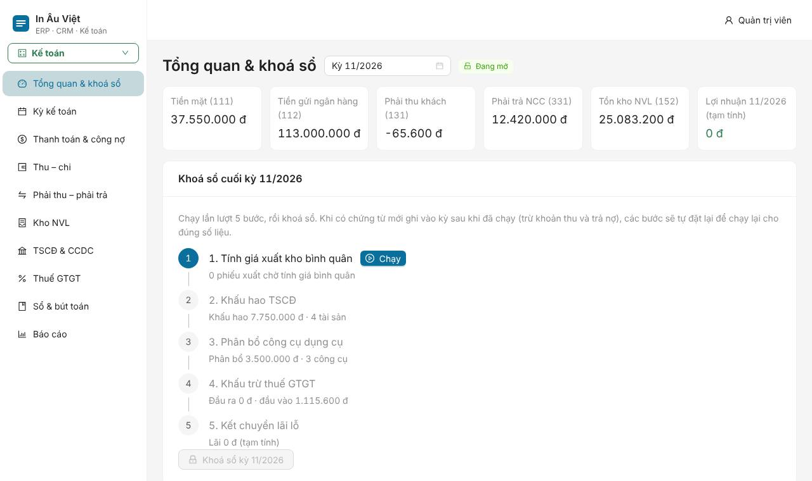
- 6 ô số liệu: tiền mặt (111), ngân hàng (112), phải thu khách (131), phải trả nhà cung cấp (331), tồn kho vật tư (152), lợi nhuận của kỳ. Kỳ chưa khoá thì lợi nhuận ghi “tạm tính”.
- Khoá sổ cuối kỳ: 5 bước với nút Chạy, kèm số liệu từng bước. Xem Khoá sổ cuối tháng.
- Đơn đang sản xuất chưa có phiếu xuất kho: nhắc lập phiếu xuất vật tư cho đơn, nếu không giá vốn của đơn sẽ bằng 0 khi nghiệm thu. Bấm Lập phiếu xuất để sang Kho NVL.
Số âm ở ô Phải thu khách nghĩa là khách đã trả trước (tiền cọc) nhiều hơn số đã nghiệm thu.
Thu – chi và phiếu chi
Sổ quỹ tiền mặt và ngân hàng, cùng nơi lập phiếu chi cho mọi khoản tiền ra: chi phí hoặc trả nợ nhà cung cấp.

Xem sổ quỹ
- Chọn Tiền mặt + ngân hàng, Tiền mặt (111) hoặc Ngân hàng (112).
- Mỗi dòng có ngày, số chứng từ, diễn giải, thu, chi và số tồn sau dòng đó.
- Khoản thu của khách tự hiện ở đây (ghi từ Thanh toán & công nợ), không phải nhập lại.
Lập phiếu chi
- Bấm Lập phiếu chi (chỉ có ở kỳ đang mở).
- Chọn loại: Chi phí hoặc Trả nợ nhà cung cấp.
- Chọn ngày chi (phải trong kỳ đang mở) và chi bằng Tiền mặt hay Chuyển khoản.
- Chi phí: chọn khoản mục (thuê mặt bằng, điện nước, lương…). Trả nợ: chọn nhà cung cấp.
- Ghi diễn giải, số tiền (chi phí: số tiền trước thuế, chọn thuế GTGT nếu có hoá đơn). Bấm Ghi phiếu chi.
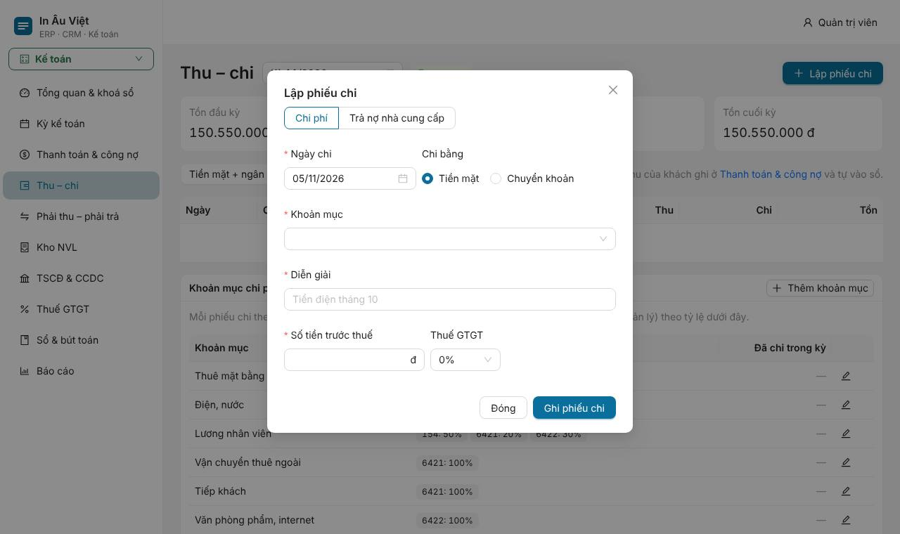
Phiếu chi được đánh số tự động PC-YYMM-NNNN.
Khoản mục chi phí
Mỗi khoản mục quy định chi phí được chia vào đâu: 154 (chi phí sản xuất chung — sau này vào giá vốn), 6421 (bán hàng), 6422 (quản lý). Ví dụ “Điện, nước”: 60% vào 154, 40% vào 6422.
- Bảng khoản mục ở cuối trang Thu – chi, kèm số đã chi trong kỳ.
- Kế toán trưởng bấm Thêm khoản mục hoặc biểu tượng sửa để đổi tỷ lệ. Tổng tỷ lệ phải bằng 100%.
- Khoản mục không dùng nữa thì tắt “Đang dùng”.
Kho nguyên vật liệu
Theo dõi nhập, xuất, tồn từng vật tư. Vật tư xuất cho đơn nào sẽ thành giá vốn của đơn đó khi khách nghiệm thu.
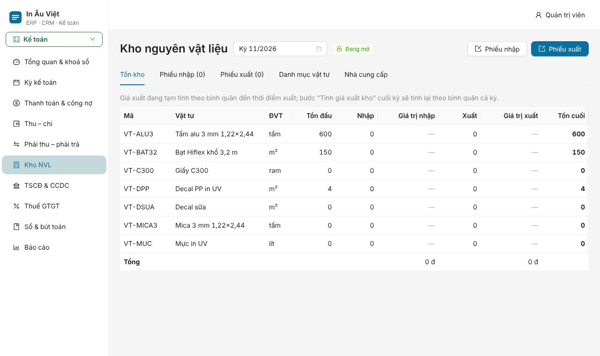
Các thẻ
- Tồn kho: số lượng và giá trị đầu kỳ, nhập, xuất, tồn cuối. Số tồn âm hiện màu đỏ.
- Phiếu nhập, Phiếu xuất: danh sách phiếu trong kỳ, có nút xoá ở kỳ đang mở.
- Danh mục vật tư, Nhà cung cấp: thêm, sửa, ngừng dùng.
Lập phiếu nhập kho (mua vật tư)
- Bấm Phiếu nhập.
- Chọn ngày nhập, nhà cung cấp, cách thanh toán: Tiền mặt (111), Chuyển khoản (112) hoặc Mua chịu (331) nếu chưa trả tiền.
- Chọn thuế GTGT theo hoá đơn (mặc định 8%).
- Thêm từng dòng vật tư: chọn vật tư, nhập số lượng và đơn giá (chưa thuế). Bấm Ghi phiếu nhập.

Mua chịu thì sau này trả tiền bằng phiếu chi → Trả nợ nhà cung cấp.
Lập phiếu xuất kho (xuất cho sản xuất)
- Bấm Phiếu xuất.
- Chọn ngày xuất và đơn hàng được xuất vật tư (gõ mã đơn hoặc tên khách). Vật tư dùng chung cho xưởng (keo, mực vệ sinh máy…) thì để trống ô đơn hàng.
- Chọn vật tư và số lượng. Danh sách hiện số tồn hiện có để bạn kiểm tra. Bấm Ghi phiếu xuất.
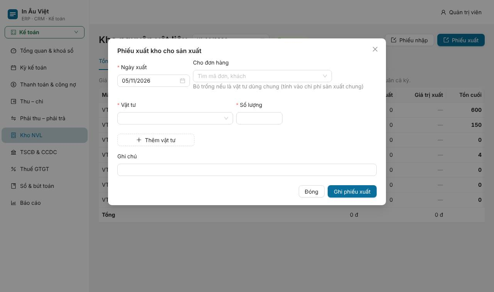
Giá xuất kho tính thế nào?
Phần mềm dùng giá bình quân cả tháng: (giá trị tồn đầu + giá trị nhập trong tháng) ÷ (số lượng tồn đầu + số lượng nhập). Trong tháng, phiếu xuất dùng giá tạm tính theo bình quân tới lúc xuất; cuối tháng, bước “Tính giá xuất kho” tính lại cho đúng.
Tài sản cố định và công cụ dụng cụ
Máy in, xe giao hàng (TSCĐ) được khấu hao hằng tháng; máy cán, máy tính (CCDC) được phân bổ dần. Phần mềm tự tính mỗi tháng khi khoá sổ.

Thêm tài sản
- Bấm Thêm tài sản.
- Chọn Tài sản cố định hoặc Công cụ dụng cụ, nhập tên và nguyên giá (chưa thuế).
- Chọn kỳ bắt đầu khấu hao / phân bổ, số tháng, và tính vào chi phí nào: 154 (máy móc xưởng), 6421 (bán hàng, ví dụ xe giao hàng), 6422 (văn phòng).
-
Mua trong kỳ:
- Bật nếu vừa mua: nhập ngày mua, cách thanh toán, thuế GTGT, nhà cung cấp (bắt buộc khi mua chịu). Phần mềm ghi bút toán mua.
- Tắt nếu tài sản đã có trước khi bắt đầu sổ: nguyên giá và hao mòn đã nằm trong số dư đầu kỳ.
- Bấm Lưu. Tài sản được đánh mã
TS-01,CC-01…
Mỗi tháng trích đều nguyên giá ÷ số tháng; tháng cuối nhận phần lẻ cho tròn nguyên giá.
Sổ & bút toán
Nơi xem toàn bộ bút toán của kỳ (nhật ký chung), bảng cân đối số phát sinh, và ghi các bút toán khác ngoài các phiếu ở trên.

Nhật ký chung
- Lọc: Tất cả, Tự động, Nhập tay / đã sửa, Cuối kỳ.
- Cột Loại cho biết nguồn bút toán (Thu tiền, Doanh thu, Nhập kho, Chi phí, Khấu hao…). Nhãn đã sửa kèm lý do khi rê chuột.
- Dòng màu cam dưới diễn giải là ghi chú, ví dụ chứng từ thuộc tháng đã khoá nên được ghi vào tháng này.
Ghi bút toán khác (PKT)
Dùng cho nghiệp vụ không có phiếu riêng: góp vốn, vay, rút tiền ngân hàng về quỹ, điều chỉnh…
- Bấm Bút toán khác.
- Chọn ngày, ghi diễn giải.
- Mỗi dòng chọn tài khoản và nhập số tiền vào cột Nợ hoặc Có. Thêm dòng nếu cần.
- Tổng Nợ phải bằng tổng Có (phần mềm báo số lệch). Bấm Lưu.
Ví dụ rút 10.000.000 đ từ ngân hàng về quỹ: Nợ 111 10.000.000 / Có 112 10.000.000.
Sửa và xoá
- Bút toán nhập tay: sửa hoặc xoá tự do khi kỳ còn mở.
- Bút toán tự động (phiếu nhập, xuất, chi…): kế toán trưởng sửa được nhưng phải ghi lý do; bút toán gốc được giữ lại để đối chiếu. Xoá thì phiếu gốc cũng bị xoá.
- Không sửa / xoá được: bút toán từ CRM (thu tiền, doanh thu) và bút toán do 5 bước cuối kỳ tạo. Muốn điều chỉnh thì ghi bút toán khác.
Cân đối số phát sinh

Mỗi tài khoản có số dư đầu kỳ, phát sinh Nợ, phát sinh Có và số dư cuối kỳ (ghi rõ dư Nợ hay dư Có). Dòng tổng: tổng phát sinh Nợ luôn bằng tổng phát sinh Có.
Khoá sổ cuối tháng
Đầu mỗi tháng, kế toán trưởng chạy lần lượt 5 bước cho tháng trước rồi khoá sổ. Khoá xong, số dư và tồn kho tự chuyển sang tháng sau.
Trước khi khoá: kiểm tra
- Đã nhập đủ phiếu chi, phiếu nhập, phiếu xuất của tháng.
- Các đơn đã nghiệm thu trong tháng đều có phiếu xuất vật tư (xem cảnh báo trên trang Tổng quan).
- Tài sản mua mới trong tháng đã được thêm.
- Kỳ trước đã khoá sổ, số dư đầu kỳ cân.
Chạy 5 bước
- Tính giá xuất kho bình quân: tính lại giá các phiếu xuất theo bình quân cả tháng, và ghi giá vốn (Nợ 632 / Có 154) cho các đơn nghiệm thu trong tháng.
- Khấu hao TSCĐ: ghi khấu hao tháng của tài sản cố định (Có 214).
- Phân bổ công cụ dụng cụ: ghi phân bổ tháng (Có 242).
- Khấu trừ thuế GTGT: trừ thuế đầu vào vào thuế đầu ra (Nợ 33311 / Có 1331), lấy số nhỏ hơn.
- Kết chuyển lãi lỗ: đưa chi phí sản xuất chung vào giá vốn, doanh thu và chi phí vào 911, lãi hoặc lỗ vào 421.
Bấm Chạy ở bước đang sáng. Chạy xong bước nào sẽ có dấu ✓ và số liệu của bước đó.
Khoá sổ
- Đủ 5 bước thì nút Khoá sổ kỳ MM/YYYY sáng lên. Bấm nút.
- Đọc thông báo, bấm Khoá sổ để xác nhận.
Sau khi khoá: kỳ chuyển sang “Đã khoá sổ”, kết quả kinh doanh được lưu, số dư cuối kỳ và tồn kho (số lượng, đơn giá bình quân) thành số đầu kỳ của tháng sau.
Kỳ kế toán và mở lại kỳ
Danh sách các tháng đã ghi sổ, kết quả từng tháng, ai khoá và lúc nào. Kỳ đã khoá có thể mở lại khi cần sửa.
- Mỗi dòng: kỳ, trạng thái, số bước cuối kỳ đã chạy, doanh thu, lợi nhuận (tạm tính nếu chưa khoá), người khoá và thời điểm.
- Bấm vào tên kỳ để mở Tổng quan của kỳ đó.
- Thẻ Nhật ký khoá sổ ghi mọi thao tác: chạy bước, đặt lại bước, khoá, mở lại, sửa bút toán.
Mở lại một kỳ đã khoá
- Bấm Mở lại kỳ ở kỳ đã khoá gần nhất.
- Ghi lý do (bắt buộc), bấm Mở lại kỳ.
- Sửa chứng từ cần sửa, rồi chạy lại 5 bước và khoá sổ lại.
Công nợ, thuế GTGT và báo cáo
Ba màn hình chỉ để xem, giúp trả lời: ai còn nợ mình, mình còn nợ ai, tháng này nộp bao nhiêu thuế và lãi hay lỗ.
Phải thu – phải trả
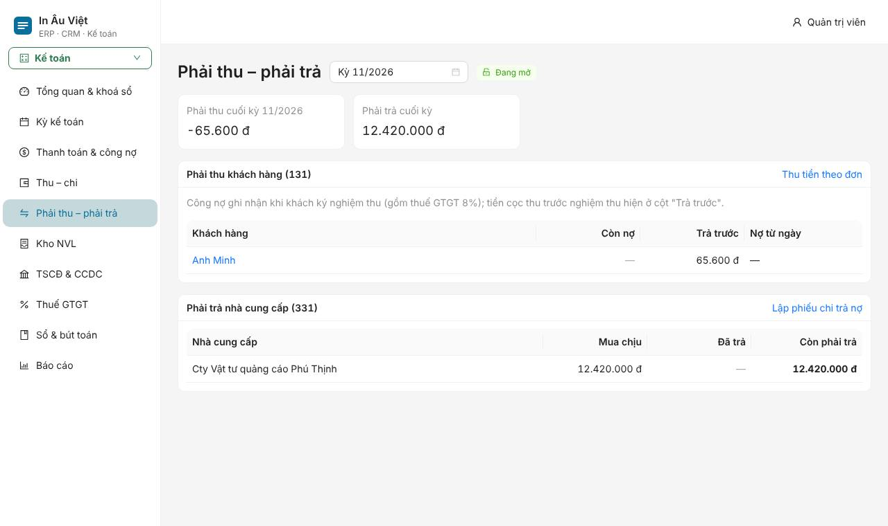
- Phải thu khách (131): còn nợ (gồm 8% VAT), trả trước (tiền cọc), nợ từ ngày nào; nhãn đỏ quá 30 ngày.
- Phải trả nhà cung cấp (331): mua chịu, đã trả, còn phải trả.
- Dòng “Số dư đầu kỳ chưa phân theo khách / nhà cung cấp” là phần công nợ nhập ở số dư đầu kỳ.
Thuế GTGT

- Thuế đầu ra: 8% trên doanh thu các đơn nghiệm thu trong kỳ.
- Thuế đầu vào: từ phiếu nhập, phiếu chi, mua tài sản có thuế.
- Phải nộp = đầu ra − đầu vào − đầu vào kỳ trước chuyển sang. Nếu âm thì là số còn được khấu trừ chuyển kỳ sau.
Báo cáo
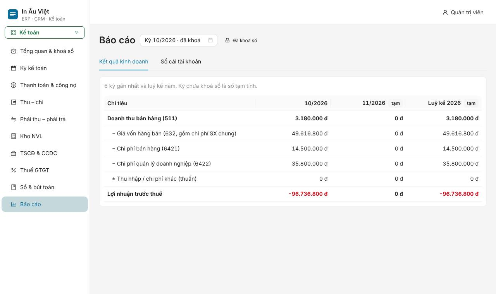
- Kết quả kinh doanh: doanh thu, giá vốn (gồm chi phí sản xuất chung), chi phí bán hàng, chi phí quản lý, thu nhập / chi phí khác, lợi nhuận trước thuế. Kỳ chưa khoá có nhãn tạm.
- Sổ cái tài khoản: chọn một tài khoản để xem số dư đầu kỳ, từng phát sinh kèm tài khoản đối ứng và số dư sau mỗi dòng.
Tổng quan phân hệ Kho
Phân hệ Kho theo dõi hai loại hàng: vật tư (giấy, decal, bạt, mực… đếm theo số lượng) và khuôn bế (quản lý từng cái, mỗi khuôn một mã). Mỗi loại có một trang làm việc riêng: và .
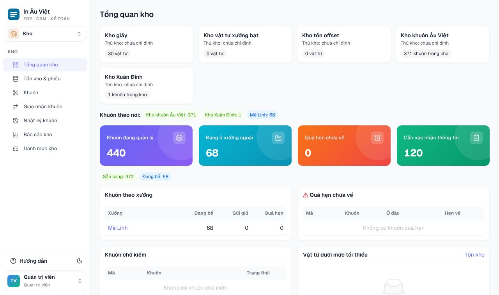
Hai loại hàng, hai cách làm
| Vật tư | Khuôn | |
|---|---|---|
| Đếm theo | Số lượng của từng quy cách (khổ) ở từng kho | Từng khuôn, mỗi khuôn một mã (TUI-355, HOP-012…) |
| Ghi bằng | Phiếu nhập kho, xuất kho, nhập lại, chuyển kho | Tạo khuôn, kiểm tra, bế khuôn, chuyển kho |
| Khi nào có hiệu lực | Khi thủ kho của kho đó xác nhận phiếu (thủ kho tự lập thì có hiệu lực ngay) | Ngay khi lưu, không chờ ai xác nhận |
| Ở đâu | Trong một kho bất kỳ | Ở một kho bất kỳ (kệ nào), hoặc ở một đối tác (xưởng bế, nơi làm khuôn) |
| Trang làm việc | Kho vật tư | Kho khuôn |
Các menu
| Menu | Dùng để |
|---|---|
| Xem nhanh đầu ngày: phiếu đang chờ bạn xác nhận, hàng đang chuyển giữa các kho, khuôn đang ở ngoài, khuôn chờ kiểm, vật tư sắp hết, phiếu gần đây. | |
| Chọn kho ở đầu trang, rồi làm việc qua ba thẻ Tồn kho, Phiếu chờ xác nhận, Tra cứu lịch sử. | |
| Chọn nơi ở đầu trang (mọi kho, các đối tác đang giữ khuôn), rồi làm việc qua ba thẻ Danh sách khuôn, Bế khuôn & chuyển kho, Nhật ký khuôn. | |
| Nhập – xuất – tồn theo khoảng ngày, tồn cuối một ngày bất kỳ, sổ phiếu theo ngày. | |
| Các danh mục độc lập: Kho (kèm vị trí kệ), Vật tư, Khuôn, Đối tác; nhập tồn vật tư và bảng khuôn từ Excel. |
Quy tắc chung
- Danh mục độc lập, không ràng buộc. Kho, vật tư, khuôn (ký hiệu), đối tác khai riêng, không phải gắn trước với nhau: kho nào cũng giữ được cả vật tư lẫn khuôn; lập phiếu ở kho nào cũng chọn được mọi vật tư; ô đối tác nào cũng chọn được mọi đối tác. Chỉ kệ là bắt buộc thuộc một kho.
- Chọn có sẵn hoặc gõ tên mới. Ở các ô Nơi lấy hàng nhập kho, Nơi làm khuôn, Xưởng bế, Kệ: có rồi thì chọn; chưa có thì gõ tên rồi chọn dòng + Thêm “…”. Lưu xong, tên đó tự vào danh mục cho lần sau. Gõ trùng tên đã có (khác hoa thường, thừa dấu cách) thì phần mềm dùng lại tên cũ, không tạo trùng.
- Kho chỉ theo dõi số lượng, không ghi đơn giá. Giá trị vật tư theo dõi ở phân hệ Kế toán.
- Mọi bảng chia trang 50 / 100 / 200 dòng (mặc định 50), đổi ở góc dưới bảng.
- Không xoá phiếu, không xoá lịch sử. Ghi sai thì huỷ phiếu (vật tư) hoặc chuyển lại (khuôn); lịch sử ghi lại cả hai lần.
Ai làm được gì
| Quyền / vai trò | Làm được |
|---|---|
| Xem kho | Xem tồn, phiếu, khuôn, báo cáo. |
| Lập phiếu kho | Lập phiếu vật tư ở mọi kho; huỷ phiếu mình lập khi chưa xác nhận. |
| Thủ kho của một kho | Phiếu mình lập ở kho đó có hiệu lực ngay; xác nhận / từ chối phiếu người khác lập; huỷ phiếu đã xác nhận. |
| Quản lý khuôn | Toàn bộ việc với khuôn: tạo, sửa, kiểm tra, bế khuôn, chuyển kho, gửi sửa, đổi kệ, thanh lý. Không cần là thủ kho. |
| Quản lý kho | Thêm / sửa kho và thủ kho, danh mục vật tư, đối tác, kệ, ký hiệu; nhập Excel; chụp tồn bù. |
Quyền cấp theo nhóm quyền (quản trị viên cấp). Thủ kho chọn ở Danh mục kho → Kho.
Thiết lập ban đầu
Các danh mục kho độc lập với nhau: khai kho, khai vật tư, khai đối tác riêng, không phải gắn trước cái này với cái kia. Lập phiếu ở kho nào cũng chọn được mọi vật tư; đưa khuôn đi đâu cũng chọn được mọi đối tác. Cần quyền Quản lý kho; nơi lấy hàng, xưởng bế, kệ còn gõ tên mới được ngay lúc lập phiếu.
Các thẻ, theo thứ tự: Kho (kèm vị trí kệ) · Vật tư · Khuôn · Đối tác · Nhập tồn vật tư Excel · Nhập bảng khuôn Excel.
Bước 1. Kho, thủ kho và kệ
Kho nào cũng giữ được cả vật tư lẫn khuôn, không phải chọn trước kho dùng cho việc gì. Ví dụ: Kho giấy (GIAY), Kho vật tư xưởng bạt (BAT), Kho tồn offset (OFFSET), Kho khuôn Âu Việt (KHUON), Kho Xuân Đỉnh (XUANDINH).
- Thẻ Kho → bấm ✎ ở một kho để sửa tên, địa chỉ và chọn thủ kho (một hoặc nhiều người); bấm Thêm kho để tạo kho mới.
- Bấm Lưu.
- Ngay dưới danh sách kho là Vị trí kệ: chọn kho, gõ mã kệ (T4-K02-O03), bấm Thêm kệ. Mỗi kệ bắt buộc thuộc một kho; lọc danh sách kệ theo kho bằng ô bên dưới.

Bước 2. Vật tư
Một danh mục vật tư chung, không gắn với kho. Nhập vào kho nào thì kho đó có tồn; tồn từng kho xem ở Kho vật tư. Giấy và vật tư đang theo dõi trên Excel có thể nhập thẳng (xem Nhập tồn vật tư từ Excel), không cần khai tay.
- Thẻ Vật tư → Thêm vật tư.
- Ghi Mã (không bắt buộc; giấy dùng đúng Mã VT trong bảng theo dõi như DC, GN, Op, C150 — nhiều vật tư được chung một mã), Nhóm (Đề can, Giấy ngoại, Couche, Bạt, Mực…), Tên và Đơn vị cơ sở (tờ, m, kg…). Tồn luôn lưu theo đơn vị cơ sở.
- Quy cách: giấy ghi rộng × dài (79 × 109); hàng cuộn chỉ ghi khổ rộng (bạt khổ 320). Vật tư không theo khổ (keo, mực) thì tắt Có quy cách / khổ.
- Đơn vị tính khác: ví dụ 1 ram = 500 tờ, 1 cuộn = 50 m. Nếu một khổ đóng gói khác, thêm dòng cùng tên và chọn khổ đó ở ô cuối (1 ram = 250 tờ chỉ cho khổ 23 × 86).
- Bấm Lưu.
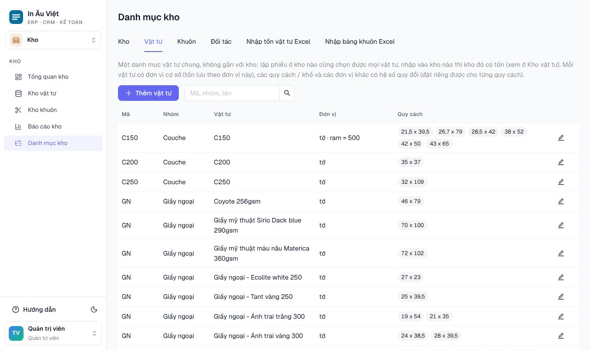
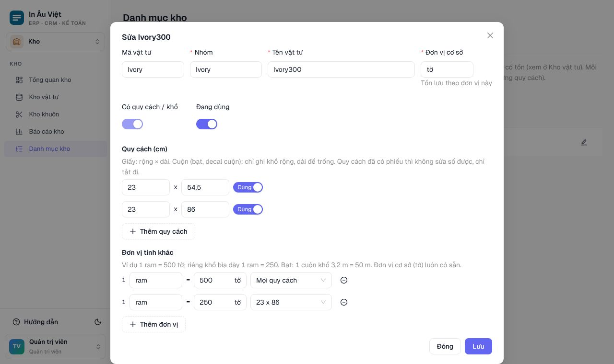
Bước 3. Khuôn (ký hiệu)
Thẻ Khuôn giữ các ký hiệu nhóm khuôn: TUI, HOP, KEF… và số đã cấp tới đâu. Mã khuôn mới = ký hiệu + số kế tiếp (TUI-356). Gõ ký hiệu và tên rồi bấm Thêm / sửa.
Bước 4. Đối tác
Một danh sách đối tác chung: xưởng bế (Mê Linh, A.Kiên Trương Định…), nơi làm khuôn (Em Hòa, Khoa Nhật Minh…), nơi lấy hàng. Ô Nơi lấy hàng nhập kho, Nơi làm khuôn, Xưởng bế, Gửi sửa đều chọn được mọi đối tác. Cột Loại chỉ để ghi nhớ, bỏ trống được, không giới hạn chỗ chọn.
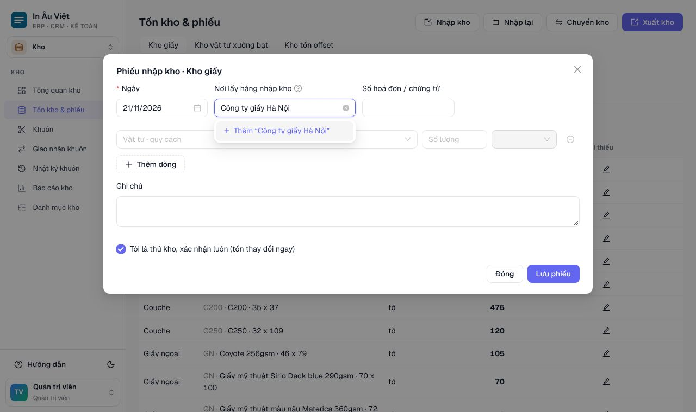
Bước 5. Tồn đầu
- Vật tư: nhập bảng tồn từ Excel vào từng kho, xem Nhập tồn vật tư từ Excel; hoặc lập một phiếu nhập kho ghi số đang có, nơi lấy hàng ghi “Tồn đầu”.
- Khuôn: nhập file Excel quản lý khuôn đang dùng, xem Nhập bảng khuôn Excel.
Bước 6. Mức tối thiểu
Ở , thẻ Tồn kho, cột Tối thiểu: bấm ✎ để đặt mức nhắc cho từng quy cách tại kho đó. Quy cách xuống dưới mức này hiện ở ô Vật tư dưới mức tối thiểu trên Tổng quan kho.
Nhập tồn vật tư từ Excel
Đưa bảng tồn đang theo dõi trên Excel / Google Sheets (ví dụ bảng “THEO DÕI GIẤY TỒN”) vào một kho, để tồn trên phần mềm khớp đúng cột TỒN của bảng. Làm lúc bắt đầu, và mỗi lần kiểm kê lại. Mỗi kho nhập riêng một bảng.
- Mở bảng tồn → Tệp → Tải xuống → Microsoft Excel (.xlsx).
- Chọn kho ở ô Nhập vào kho (mặc định Kho giấy).
- Kéo file vào ô, bấm Xem trước. Phần mềm chưa ghi gì.
- Đọc kết quả xem trước: số vật tư và quy cách sẽ tạo, số quy cách cần điều chỉnh, và bảng từng dòng với cột Đang có (tồn của kho đó trên phần mềm) và Chênh (số sẽ cộng / trừ). Mục Điểm cần xem liệt kê dòng chưa đếm, dòng lỗi.
- Bấm Nhập. Phần mềm tạo vật tư và quy cách còn thiếu trong danh mục chung, rồi lập một phiếu điều chỉnh ở kho đã chọn (số DC-mã kho-…) chỉ gồm các dòng có chênh.
- Thủ kho của kho đó vào → Phiếu chờ xác nhận, mở phiếu, đối chiếu rồi bấm Xác nhận. Xác nhận xong tồn mới đổi. Sai nhiều thì Từ chối, sửa bảng và nhập lại.
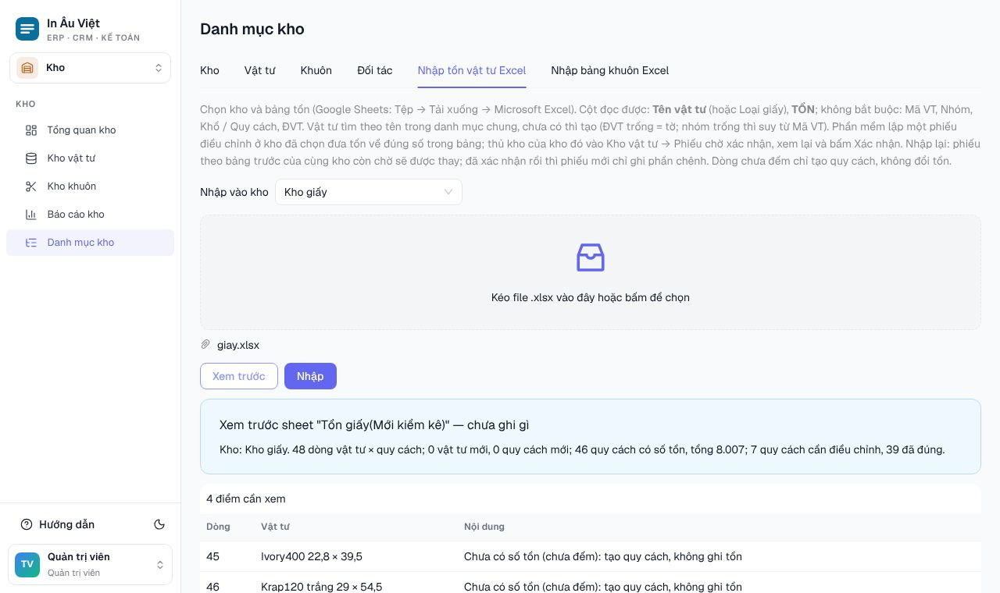
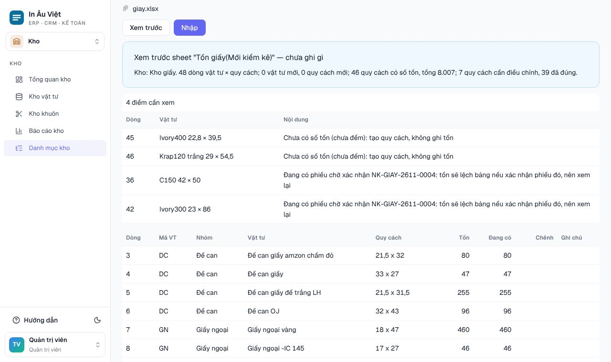
Cột trong bảng
| Cột | Bắt buộc | Phần mềm dùng để |
|---|---|---|
| Tên vật tư (hoặc Loại giấy) | Có | Tìm vật tư trong danh mục theo tên; chưa có thì tạo mới |
| TỒN | Có | Số tồn đúng của kho đã chọn sau khi xác nhận phiếu. Để trống / “chưa đếm” = chỉ tạo quy cách, không đổi tồn |
| Mã VT | Không | Mã vật tư, giữ đúng như bảng. Nhiều vật tư được chung một mã |
| Nhóm | Không | Nhóm vật tư. Trống thì suy từ Mã VT: DC → Đề can, GN → Giấy ngoại, C150 / C200… → Couche; mã khác giữ nguyên làm tên nhóm |
| Khổ giấy / Quy cách | Không | Rộng × dài (79x109) hoặc khổ cuộn (320). Trống = vật tư không theo khổ |
| ĐVT | Không | Đơn vị cơ sở khi tạo vật tư mới; trống = tờ. Vật tư đã có thì giữ đơn vị cũ |
Nhập lại lần sau
- Làm y như trên, chọn đúng kho. Phiếu chỉ ghi phần chênh giữa bảng và tồn đã xác nhận của kho đó, không cộng dồn.
- Nếu phiếu theo bảng của lần trước ở cùng kho còn chờ xác nhận, phần mềm huỷ nó và thay bằng phiếu mới.
- Chạy lại không tạo trùng vật tư hay quy cách.
- Nếu đang có phiếu nhập / xuất khác chờ xác nhận cho cùng quy cách ở kho đó, mục Điểm cần xem báo để thủ kho xem lại trước khi xác nhận.
Kho vật tư: tồn kho và phiếu
Chọn kho ở đầu trang (mọi kho đều có ở đây), rồi làm việc qua ba thẻ. Mọi thay đổi tồn đều đi qua phiếu; phiếu có hiệu lực khi thủ kho của kho đó xác nhận.
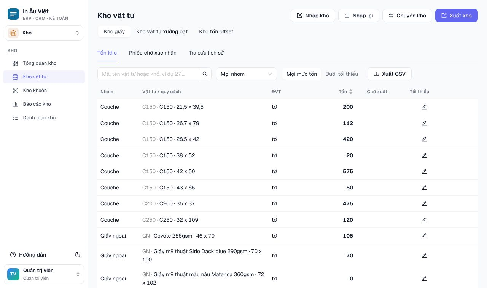
| Thẻ | Dùng để |
|---|---|
| Tồn kho | Tồn từng quy cách của kho đang chọn. Tìm theo mã, tên, khổ; lọc nhóm; chọn Dưới tối thiểu; Xuất CSV. Cột Chờ xuất là số đang nằm trong phiếu xuất / chuyển đi chưa xác nhận. Bấm một dòng để xem thẻ kho (từng phiếu và tồn sau mỗi phiếu). |
| Phiếu chờ xác nhận | Phiếu của kho này đang chờ thủ kho. Số đỏ trên nút kho = số phiếu đang chờ bạn. |
| Tra cứu lịch sử | Mọi phiếu của kho, lọc theo loại, trạng thái, ngày. Bấm vào phiếu để xem chi tiết, ai lập, ai xác nhận, lúc nào. |
Các loại phiếu
| Nút | Khi nào | Số phiếu |
|---|---|---|
| Nhập kho | Hàng về kho. Ghi nơi lấy hàng nhập kho, số hoá đơn / chứng từ nếu có. | NK-mã kho-… |
| Xuất kho | Đưa ra xưởng dùng. Bắt buộc ghi người nhận; nên ghi mục đích, lệnh. | XK-mã kho-… |
| Nhập lại | Xưởng dùng thừa, trả lại kho. Ghi người trả. | NL-mã kho-… |
| Chuyển kho | Chuyển sang kho khác, xem Chuyển vật tư giữa hai kho. | CK-mã kho-… |
| (tự động) | Điều chỉnh: tạo khi nhập tồn vật tư từ Excel. | DC-mã kho-… |
Lập phiếu
- Chọn kho ở đầu trang, bấm nút loại phiếu.
- Chọn ngày. Phiếu nhập: chọn nơi lấy hàng nhập kho (chưa có thì gõ tên rồi chọn + Thêm). Phiếu xuất: ghi người nhận, mục đích, lệnh / đơn tham chiếu.
- Mỗi dòng: chọn vật tư · quy cách, gõ số lượng, chọn đơn vị tính (tờ, ram…). Phần mềm hiện số quy đổi, ví dụ “= 250 tờ”. Phiếu nhập và nhập lại chọn được mọi vật tư trong danh mục; vật tư kho chưa có ghi “chưa có ở kho này”, lưu phiếu là kho có dòng tồn. Phiếu xuất chỉ chọn vật tư kho đang có.
- Bấm Lưu phiếu. Nếu bạn là thủ kho của kho này, phiếu được xác nhận luôn và tồn đổi ngay. Người khác lập thì phiếu vào thẻ Phiếu chờ xác nhận.
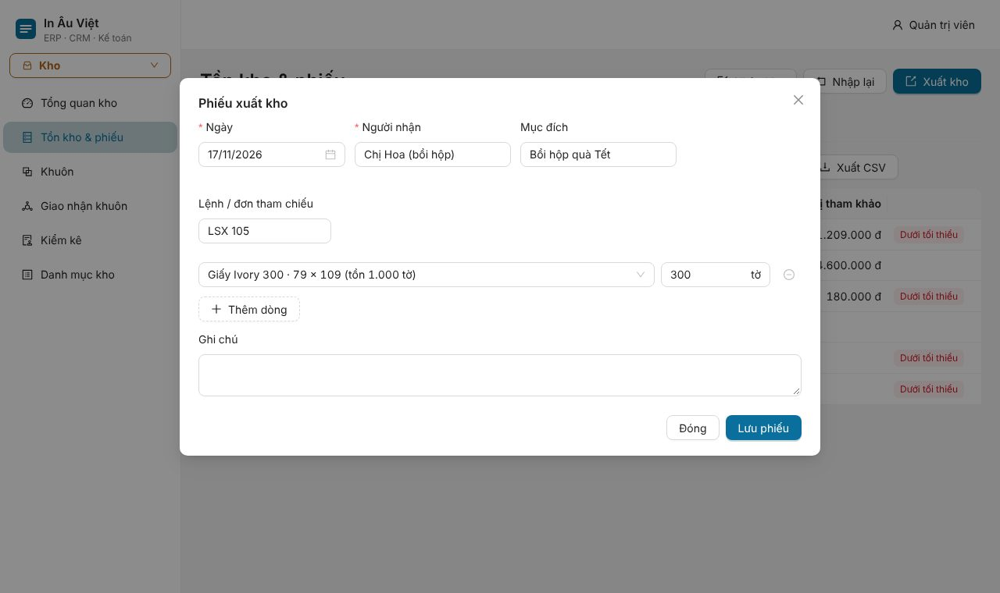
Thủ kho xác nhận
- Mở thẻ Phiếu chờ xác nhận (hoặc ô Phiếu chờ bạn xác nhận ở Tổng quan kho).
- Bấm vào phiếu, đối chiếu hàng thực tế với phiếu.
- Đúng thì bấm Xác nhận: tồn thay đổi, phiếu ghi tên thủ kho và giờ xác nhận. Sai thì bấm Từ chối và ghi lý do; người lập lập lại phiếu đúng.

Huỷ phiếu
- Phiếu chưa xác nhận: người lập hoặc thủ kho bấm Huỷ phiếu. Tồn không đổi.
- Phiếu đã xác nhận: chỉ thủ kho huỷ được, phải ghi lý do; tồn trở lại như trước phiếu. Không huỷ được nếu làm tồn âm (hàng nhập đã xuất bớt): khi đó lập phiếu xuất phần chênh thay vì huỷ.
Chuyển vật tư giữa hai kho
Ví dụ chuyển decal từ Kho giấy sang Kho vật tư xưởng bạt. Một phiếu chuyển gồm hai phiếu liên kết: Chuyển đi ở kho đi và Nhận chuyển ở kho nhận. Mỗi bên do thủ kho kho mình xác nhận.
- Chọn kho đi ở đầu trang, bấm Chuyển kho.
- Chọn kho nhận, ghi người mang, lý do; chọn vật tư, số lượng, đơn vị. Kho nhận chưa có vật tư đó thì phần mềm tự thêm.
- Bấm Lưu phiếu. Thủ kho kho đi tự lập thì bước 2 xong luôn; người khác lập thì thủ kho kho đi bấm Xác nhận xuất ở thẻ Phiếu chờ xác nhận.
- Thủ kho kho nhận thấy phiếu Nhận chuyển ở thẻ Phiếu chờ xác nhận của kho mình (và ở ô Hàng đang chuyển giữa các kho trên Tổng quan kho), kiểm hàng rồi bấm Xác nhận đã nhận.


- Kho nhận không xác nhận được khi kho đi chưa xác nhận xuất.
- Trước khi kho đi xác nhận xuất: một trong hai thủ kho từ chối, hoặc người lập huỷ, thì cả hai phiếu cùng đóng.
- Sau khi hàng đã rời kho đi: chỉ thủ kho kho đi huỷ được; phần mềm trả hàng về kho đi (và lấy ra khỏi kho nhận nếu đã nhận).
Báo cáo kho
Báo cáo vật tư tính từ các phiếu đã xác nhận, theo ngày ghi trên phiếu. Cuối mỗi ngày phần mềm tự lưu một bản chụp tồn của từng kho. (Khuôn xem ở Nhật ký khuôn.)
Nhập – xuất – tồn
Chọn kho và khoảng ngày: mỗi quy cách có tồn đầu, tổng nhập, tổng xuất, tồn cuối.
- Nhập gồm nhập kho, nhập lại, nhận chuyển, điều chỉnh tăng. Xuất gồm xuất kho, chuyển đi, điều chỉnh giảm.
- Chọn Có phát sinh để chỉ xem dòng có nhập / xuất trong kỳ.
- Xuất CSV để mở bằng Excel.
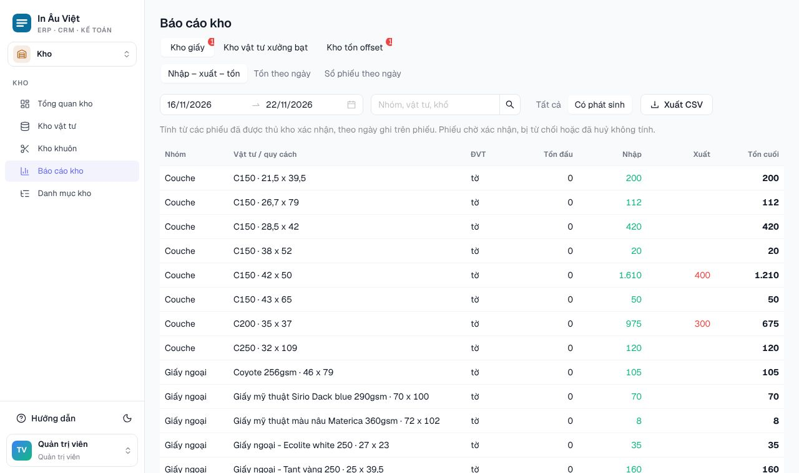
Tồn theo ngày
Chọn một ngày: phần mềm hiện tồn cuối ngày đó của từng quy cách.
- Bản chụp: hết ngày, phần mềm tự lưu tồn cuối ngày (chạy mỗi giờ, ngày nào thiếu thì chụp bù). Bản chụp không đổi về sau.
- Tính lại từ phiếu: cột bên cạnh tính lại từ phiếu hiện có. Có người lập bổ sung phiếu về ngày cũ thì cột này khác bản chụp và được tô cam.
- Ngày chưa có bản chụp (ví dụ hôm nay) thì hiện số tính từ phiếu.
- Quản lý kho có nút Chụp các ngày còn thiếu để chụp ngay.
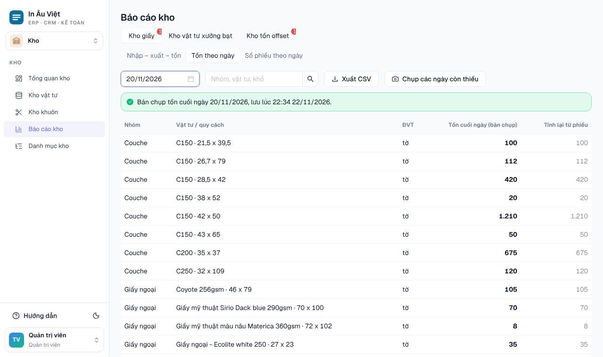
Sổ phiếu theo ngày
Mọi phiếu của kho trong khoảng ngày: loại, trạng thái, vật tư, người lập, thủ kho xác nhận và giờ xác nhận. Xuất CSV được, mỗi dòng vật tư một dòng.
Quy trình khuôn
Mỗi khuôn đi theo ba bước chính: Tạo khuôn mới → Kiểm tra → Bế khuôn. Ngoài ra có Chuyển kho để đưa khuôn giữa các kho, và Gửi sửa khi khuôn lỗi. Mọi bước có hiệu lực ngay khi lưu, không chờ ai xác nhận.
1. Tạo khuôn mới
Bấm Tạo khuôn mới, chọn ký hiệu, ghi thông tin và nơi làm khuôn (bắt buộc). Khuôn được cấp mã và nằm ở nơi làm khuôn, trạng thái Đang làm khuôn. Chi tiết ở Kho khuôn → Tạo khuôn mới.
2. Kiểm tra
- Khuôn làm xong: mở hồ sơ khuôn, bấm Kiểm tra: Đạt hoặc Kiểm tra: Không đạt. Kiểm tra ngay tại nơi khuôn đang ở, không cần chuyển về kho trước.
- Đạt → Đạt, sẵn sàng: bế được.
- Không đạt → Không đạt: ghi lý do (dao lệch, mẻ, cong…). Nơi làm khuôn làm lại, xong thì kiểm tra lần nữa.
3. Bế khuôn
- Mở khuôn đã đạt, bấm Bế khuôn. Nhiều khuôn một chuyến: tích chọn ở danh sách rồi bấm Bế khuôn trên đầu trang.
- Chọn nơi bế: mọi đối tác đều chọn được (chưa có thì gõ tên rồi chọn + Thêm đối tác), ghi lệnh sản xuất nếu có.
- Bấm Bế khuôn. Khuôn tới xưởng, trạng thái Đang bế.
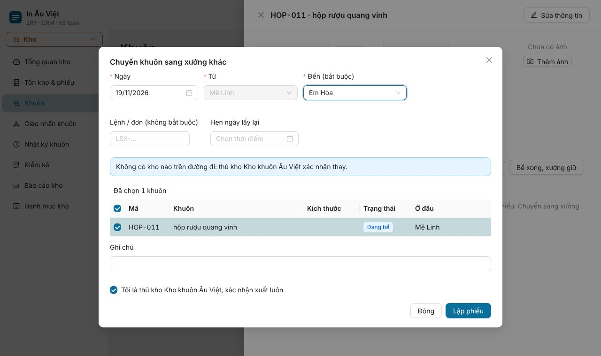
- Khuôn đi thẳng từ nơi đang ở (nơi làm khuôn, kho, hoặc xưởng bế khác), không bắt buộc qua kho.
- Phần mềm không đặt hạn trả: khuôn ở xưởng bao lâu cũng được, chỉ ghi khuôn đang ở đâu.
- Lệnh sản xuất chỉ là số tham chiếu (không bắt buộc), để sau này tra khuôn đã bế cho lệnh nào.
Chuyển kho
| Trường hợp | Làm thế nào | Sau khi chuyển |
|---|---|---|
| Kho A → kho B | Tạo phiếu chuyển kho ở đầu trang, hoặc Chuyển kho trong hồ sơ khuôn. Chọn kho nhận và kệ nếu biết. | Giữ nguyên trạng thái |
| Bế xong, đưa khuôn về kho | Mở khuôn đang bế, bấm Chuyển về kho. | Đạt, sẵn sàng |
| Khuôn đạt nhưng chưa bế ngay | Chuyển từ nơi làm khuôn về kho để cất. | Đạt, sẵn sàng |
Xưởng giữ khuôn lại cho lần bế sau thì không cần làm gì: khuôn vẫn ghi ở xưởng đó.
Khuôn lỗi, hỏng
- Khuôn đang dùng bị lỗi: bấm Báo lỗi / hỏng → Không đạt. Tích Hỏng hẳn, không sửa được nếu đúng vậy → Hỏng.
- Sửa được: bấm Gửi sửa, chọn nơi sửa (mọi đối tác) → Đang sửa. Trạng thái tính theo nút bấm, không theo loại đối tác.
- Sửa xong: Kiểm tra: Đạt, rồi bế tiếp hoặc chuyển về kho.
- Không dùng nữa: đưa về kho rồi bấm Thanh lý → Đã thanh lý, ẩn khỏi danh sách.
Trạng thái khuôn
| Trạng thái | Nghĩa | Làm tiếp được |
|---|---|---|
| Đang làm khuôn | Khuôn mới ở nơi làm khuôn, chưa kiểm tra. | Kiểm tra |
| Đạt, sẵn sàng | Đã kiểm tra đạt, ở kho hoặc vẫn ở nơi làm khuôn. | Bế khuôn, chuyển kho, báo lỗi |
| Đang bế | Đang ở xưởng bế. | Chuyển về kho, bế ở xưởng khác, báo lỗi |
| Không đạt | Kiểm tra không đạt, hoặc báo lỗi khi đang dùng. | Gửi sửa, kiểm tra lại |
| Đang sửa | Đã gửi tới một đối tác để sửa. | Kiểm tra |
| Hỏng | Không dùng được nữa. | Thanh lý |
| Đã thanh lý | Ẩn khỏi danh sách (lọc trạng thái để xem). | — |
Kho khuôn: danh sách, tìm khuôn, tạo khuôn
Trang làm việc với khuôn. Chọn nơi trước ở hàng đầu trang (Tất cả, mọi kho, rồi các đối tác đang giữ khuôn; số sau tên là số khuôn đang ở đó), rồi chọn thẻ.
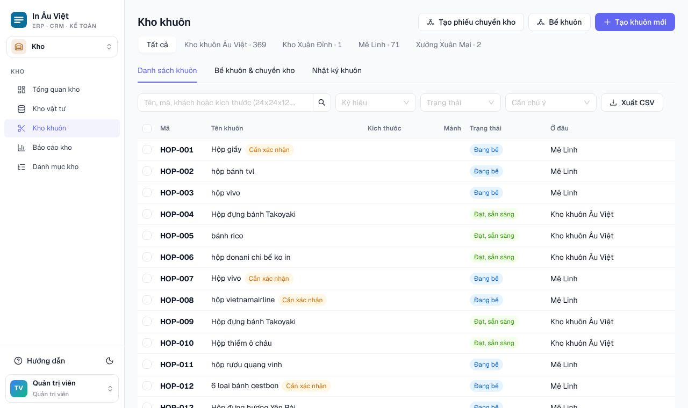
| Thẻ | Dùng để |
|---|---|
| Danh sách khuôn | Khuôn đang ở nơi đã chọn: tìm, lọc, mở hồ sơ, tạo khuôn mới, chọn nhiều khuôn để bế / chuyển. |
| Bế khuôn & chuyển kho | Các lần bế / chuyển đi hoặc đến nơi đã chọn, xem Bế khuôn & chuyển kho. |
| Nhật ký khuôn | Mọi thao tác theo ngày, xem Nhật ký khuôn. |
Các nút trên đầu thẻ Danh sách khuôn: Tạo phiếu chuyển kho, Bế khuôn, Tạo khuôn mới.
Tìm khuôn
- Một ô tìm cho cả tên, mã, khách và kích thước. Gõ không dấu cũng được.
- Gõ kích thước dạng
24x24x12.5(dấu chấm hay phẩy đều được): ra các khuôn lệch trong ± 0,5 cm mỗi chiều, không cần đúng thứ tự dài – rộng – cao. - Lọc thêm Ký hiệu, Trạng thái, Cần chú ý (cần xác nhận thông tin, đang ở ngoài). Xuất CSV ở cuối hàng lọc lưu danh sách đang lọc.
- Cột Ở đâu ghi kho và kệ, hoặc tên xưởng bế / nơi làm khuôn.
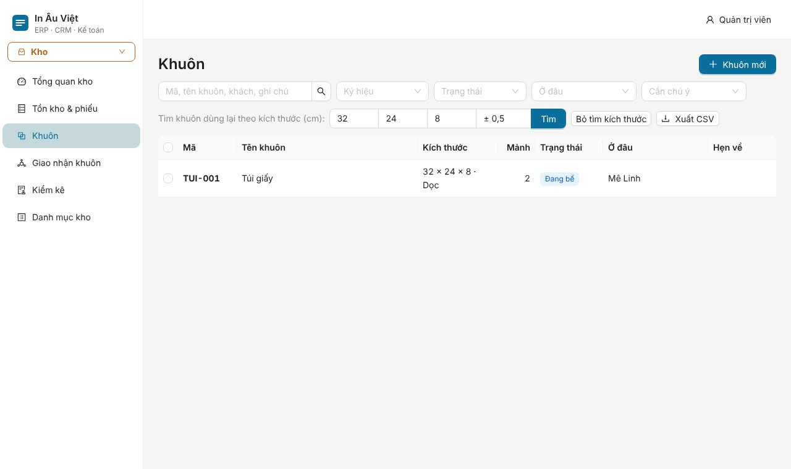
Hồ sơ khuôn
Bấm vào một khuôn để mở hồ sơ: thông tin, ảnh, nơi đang ở, khuôn gần giống kích thước, và lịch sử (đã đi những đâu, kiểm tra ra sao, bế cho lệnh nào, ai làm). Hồ sơ chỉ hiện các nút làm được ở trạng thái hiện tại:
| Nút | Làm gì |
|---|---|
| Kiểm tra: Đạt / Kiểm tra: Không đạt | Ghi kết quả kiểm tra khuôn mới / khuôn sửa. |
| Bế khuôn | Đưa tới xưởng bế (khuôn đã đạt). |
| Chuyển kho / Chuyển về kho | Đưa tới kho khác, hoặc từ xưởng / nơi làm khuôn về kho. |
| Gửi sửa | Gửi khuôn không đạt tới nơi làm khuôn. |
| Báo lỗi / hỏng | Khuôn đang dùng bị lỗi. |
| Đổi kệ, Thanh lý | Chỉ khi khuôn đang ở kho. |
| Thêm ảnh, Sửa thông tin | Chụp khuôn bằng điện thoại để dễ nhận ra; sửa tên, kích thước, số mảnh, khách… (mã khuôn không đổi được). |
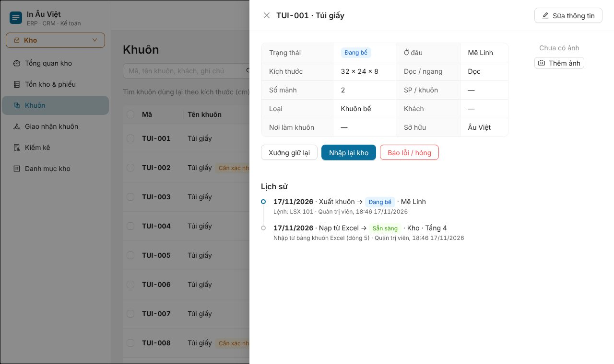
Tạo khuôn mới
- Bấm Tạo khuôn mới, chọn ký hiệu. Phần mềm cho biết mã sẽ cấp (ví dụ
TUI-355). - Ghi tên khuôn, khách, dài / rộng / cao, dọc hay ngang, số mảnh, số SP trên khuôn, giá làm khuôn.
- Nơi làm khuôn (bắt buộc): chọn trong danh sách đối tác chung, hoặc gõ tên mới rồi chọn + Thêm.
- Bấm Tạo khuôn. Khuôn ở nơi làm khuôn, trạng thái Đang làm khuôn. Làm xong thì kiểm tra.
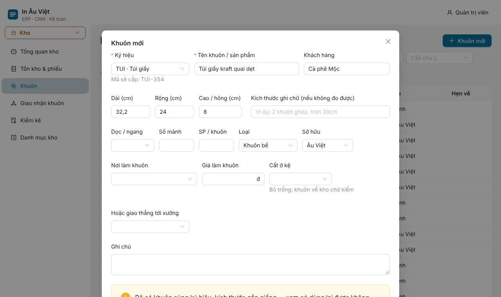
Bế khuôn và chuyển kho
Thẻ này liệt kê mọi lần bế khuôn và chuyển kho đi hoặc đến nơi đang chọn, và là chỗ đưa nhiều khuôn một chuyến. Mỗi lần có số GN-…; bấm vào để xem và in biên bản cho hai bên ký.
- Bấm Bế khuôn hoặc Tạo phiếu chuyển kho.
- Chọn Từ (nơi khuôn đang ở) và nơi đến: xưởng bế khi bế khuôn, kho nhận (và kệ) khi chuyển kho. Ghi lệnh sản xuất nếu có.
- Tích các khuôn đang ở nơi đi (lọc được theo tên, mã, kích thước).
- Bế khuôn từ kho mà có khuôn chưa có mã trên phần mềm: bấm Khuôn có trong kho nhưng chưa có mã, chọn ký hiệu, ghi tên và kích thước. Mã cấp tự động, khuôn được gắn Cần xác nhận để bổ sung sau.
- Bấm nút lưu. Khuôn đổi nơi ngay.

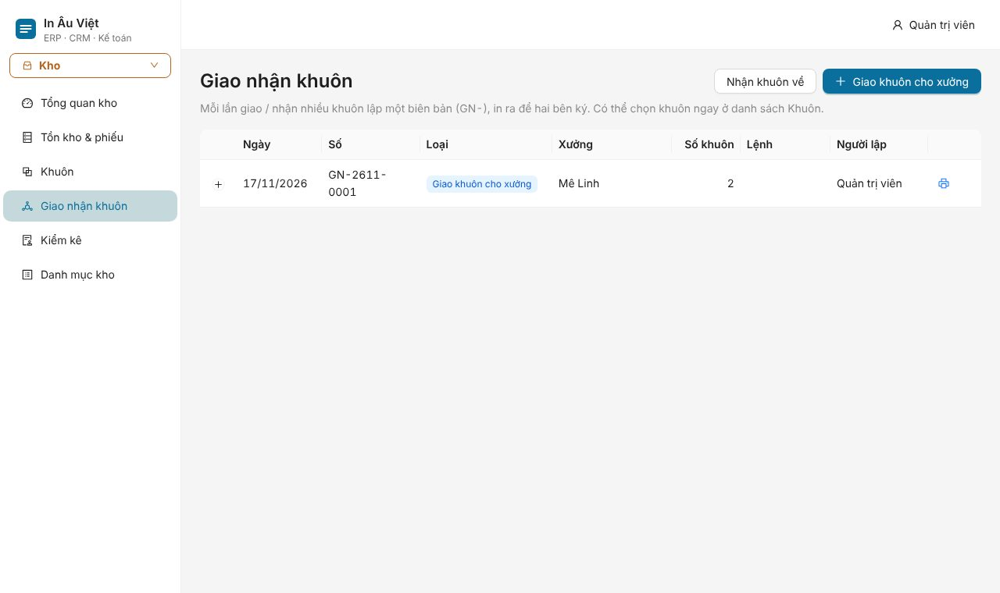
Nhật ký khuôn
Tra lại mọi thao tác với khuôn trong một ngày hoặc khoảng ngày: tạo khuôn, kiểm tra, bế khuôn, chuyển kho, gửi sửa; từ đâu tới đâu, ai làm. Dùng để soát lại cuối ngày.
- Chọn khoảng ngày, hoặc bấm Hôm nay, Hôm qua, Tháng này. Xem đúng một ngày thì chọn từ ngày đó đến ngày đó.
- Nơi chọn ở hàng đầu trang được áp dụng (khớp nơi đi hoặc nơi đến). Lọc thêm theo thao tác và người làm.
- Bấm mã khuôn để mở hồ sơ, bấm số phiếu để xem phiếu.

Nhập bảng khuôn Excel
Đưa file Excel quản lý khuôn đang dùng vào phần mềm, giữ nguyên mã khuôn cũ. Làm một lần lúc bắt đầu; chạy lại cũng không tạo trùng.
- Chọn Kho mặc định: khuôn TRONG KHO mà cột nơi không ghi tên kho nào thì vào kho này.
- Kéo file
.xlsxvào ô, hoặc bấm để chọn. File cần có sheet DANH_SACH_KHUON (dòng tiêu đề bắt đầu bằng “Mã khuôn”); sheet NHAP_LIEU nếu có sẽ được giữ làm lịch sử. - Bấm Xem trước. Phần mềm chưa ghi gì, chỉ cho biết sẽ nhập bao nhiêu khuôn, trạng thái, đối tác và kệ sẽ tạo, và các điểm cần xem.
- Đọc các điểm cần xem. Sai nhiều thì sửa file Excel rồi xem trước lại.
- Bấm Nhập → xác nhận.

Phần mềm hiểu file thế nào
| Trong Excel | Trong phần mềm |
|---|---|
| TRONG KHO | Đạt, sẵn sàng, ở kho mặc định đã chọn |
| Vị trí kệ | Kệ của đúng kho khuôn đó nằm; chưa có thì tạo kệ mới trong kho đó |
| Nơi ghi tên một kho (“Xuân Đỉnh”) | Ở kho đó (so với mọi kho, không phải xưởng) |
| ĐANG SẢN XUẤT + nơi bế | Đang bế ở đối tác đó; “Ngày dự kiến lấy lại” chỉ ghi vào lịch sử khuôn |
| Trạng thái khác (CHƯA XÁC NHẬN…) | Đạt, sẵn sàng ở kho, gắn Cần xác nhận |
| Kích thước “32x24x8”, “35x35x12c”, “Túi lịch 65x43” | Dài / rộng / cao để tìm theo số |
| Kích thước chỉ ghi chữ (“38 cm”, hai khuôn ghép) | Giữ nguyên chữ, không tìm theo số được |
| NOTE 1, NOTE 2 (Dọc / Ngang, “2 mảnh”, “8 bát/1 khuôn”) | Dọc / ngang, số mảnh, số SP trên khuôn; còn lại vào ghi chú |
| Nơi bế / nơi ra khuôn chưa có trong danh mục | Tạo đối tác mới, không gán loại. Nơi ra khuôn chỉ xuất hiện 1–2 dòng thì vào ghi chú |
| Các dòng XUẤT / NHẬP ở NHAP_LIEU | Lịch sử của khuôn |
Khuôn được gắn Cần xác nhận khi: trùng kích thước với khuôn khác cùng ký hiệu, ra xưởng hơn 45 ngày, trạng thái không rõ, nơi bế “Khác”, hoặc không có dòng TẠO KHUÔN. Sau khi nhập, vào → lọc Cần chú ý và rà dần.
Hỏi đáp về kho
| Câu hỏi | Trả lời |
|---|---|
| Lập phiếu xong mà tồn không đổi? | Phiếu đang chờ thủ kho xác nhận. Xem thẻ Phiếu chờ xác nhận. Thủ kho của kho đó tự lập thì tồn đổi ngay. |
| Tôi là thủ kho nhưng phiếu vẫn chờ? | Bạn là thủ kho của kho khác. Kiểm tra kho đang chọn ở đầu trang, hoặc nhờ quản lý kho thêm bạn làm thủ kho kho này (Danh mục kho → Kho). |
| Không thấy nơi lấy hàng / xưởng bế trong ô chọn? | Gõ tên rồi chọn + Thêm “…”; lưu xong là có trong danh mục. |
| Nhập sai số lượng, đã xác nhận rồi? | Thủ kho huỷ phiếu (ghi lý do) rồi lập phiếu đúng. Hàng đã xuất bớt thì lập thêm phiếu nhập / xuất phần chênh. |
| Muốn đưa tồn về đúng bảng kiểm kê? | Nhập lại bảng tồn cho kho đó, xem Nhập tồn vật tư từ Excel. Phiếu chỉ ghi phần chênh. |
| Vật tư mới khai không thấy ở Kho vật tư? | Danh mục vật tư không gắn với kho. Lập phiếu nhập ở kho cần dùng (ô vật tư có cả vật tư chưa có ở kho): lưu phiếu là kho đó có dòng tồn. |
| Khuôn chuyển rồi có cần ai xác nhận không? | Không. Mọi bước với khuôn có hiệu lực ngay khi lưu. |
| Không bế được khuôn? | Khuôn chưa kiểm tra đạt. Mở hồ sơ, bấm Kiểm tra: Đạt (nếu đúng là đạt) rồi bế. |
| Bế khuôn thẳng từ nơi làm khuôn được không? | Được, miễn khuôn đã kiểm tra đạt. Không bắt buộc về kho trước. |
| Khuôn ở xưởng lâu rồi, có nhắc trả không? | Không. Phần mềm chỉ ghi khuôn đang ở đâu; xem ô Khuôn đang ở ngoài trên Tổng quan kho để tự theo dõi. |
| Chuyển khuôn nhầm nơi? | Chuyển lại về đúng nơi. Lịch sử ghi cả hai lần. |
| Gửi khuôn tới một xưởng bế để sửa được không? | Được. Đối tác nào cũng chọn được; bấm Gửi sửa thì khuôn thành Đang sửa, bấm Bế khuôn thì thành Đang bế. |